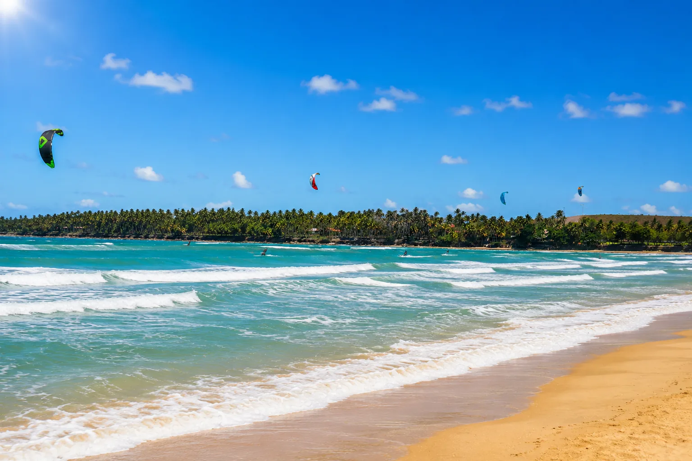
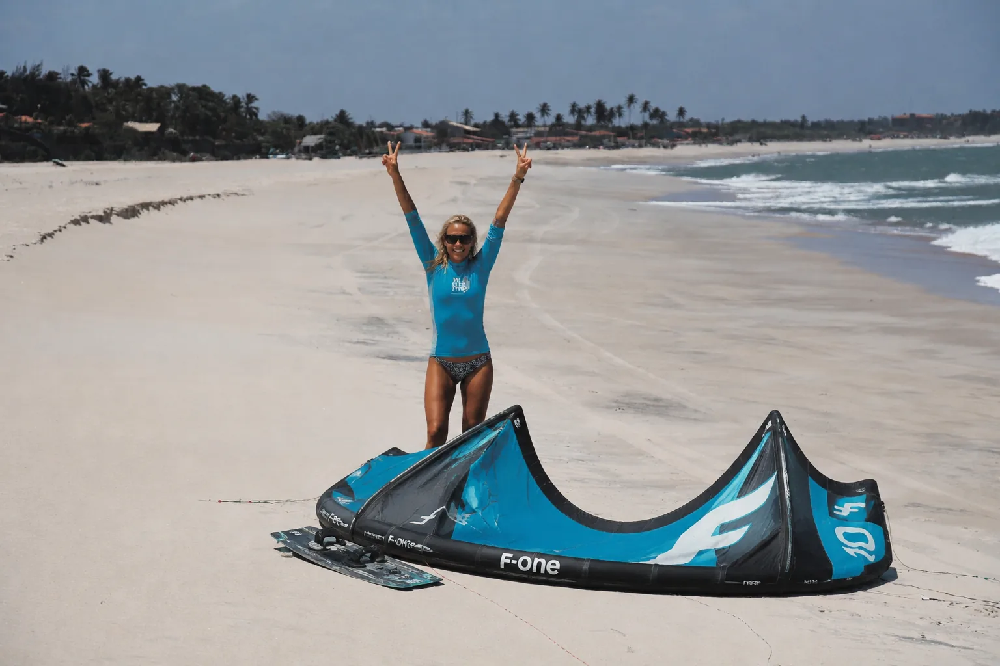
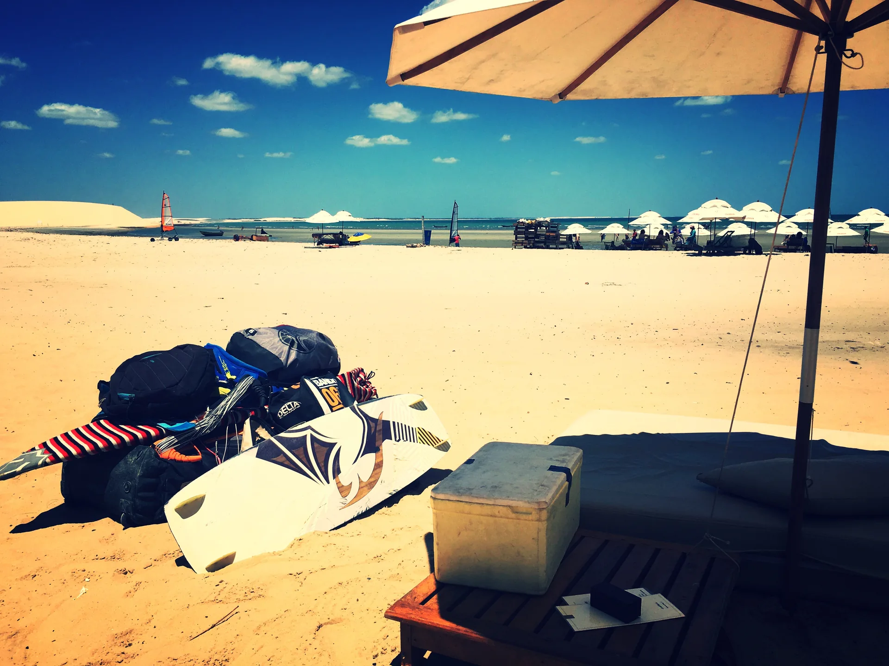
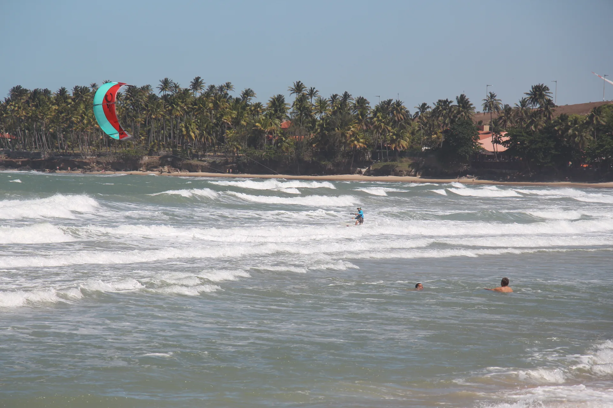

Vent, eau, voile, ciel. À Préa, le kitesurf n'est pas une activité — c'est une expérience qui change la façon dont on respire.
Contrairement à la plupart des sports nautiques qui demandent des années de pratique pour vraiment ressentir la glisse, le kitesurf est accessible en quelques jours. C'est l'un des apprentissages les plus rapides parmi tous les sports de glisse — surf, planche à voile, wakeboard ou windsurf — grâce à un équipement léger et une logique de pilotage intuitive.
À Préa, les conditions sont idéales pour débuter : eaux peu profondes où l'on a pied même loin du rivage, lagunes calmes pour les premiers décollages, vent constant et régulier qui vient de la mer. Pas de vagues qui surprennent, pas de stress du grand bain, pas de moteur à vidanger — juste votre voile et vous, face à l'horizon.
C'est aussi un sport qui vous reconnecte aux éléments comme rarement. Pas de carburant, pas de moteur, pas de bruit mécanique. Le silence du vent, le clapotis de l'eau, et cette sensation unique d'être tracté par la nature elle-même. Une parenthèse de pleine présence — un vrai reset pour le corps et la tête après une session.
3 à 5 jours suffisent pour vos premières glisses autonomes. Le kite est, de loin, le sport de glisse le plus rapide à apprendre — pas besoin d'avoir grandi à la mer pour décoller.
Pas de moteur, pas de bruit, pas de carburant. Juste votre voile, le vent et la mer. Un sport propre qui vous remet en lien direct avec la nature, à chaque session.
Préa et Jericoacoara concentrent les meilleures conditions au monde : vent constant 8 mois sur 12, eaux peu profondes, lagunes plates pour débuter, plages immenses sans foule.
Le kite n'est pas un sport d'élite. Pas besoin d'être sportif·ve, musclé·e, jeune ou casse-cou. Il est ouvert à tout type de personne, à tout âge — et la seule chose qu'il demande, c'est l'envie d'essayer.
Et puis surtout, on s'éclate. La première fois que tu glisses, tu comprends pourquoi cette communauté est si soudée et passionnée.

« Pas de moteur, pas d'écran, pas de notifications. Juste votre voile, l'horizon, et le bruit de l'eau qui glisse sous vos pieds. »


En moyenne, 3 à 5 jours de cours suffisent pour réussir vos premières glisses en autonomie. C'est l'un des sports de glisse les plus rapides à apprendre, bien plus accessible que le surf ou la planche à voile. À Préa, les conditions exceptionnelles (eaux peu profondes, vent constant) accélèrent encore l'apprentissage.
La saison idéale s'étend de juillet à février, avec un vent constant et fiable presque tous les jours. Les mois les plus venteux sont d'août à décembre. La température de l'eau reste autour de 26-28°C toute l'année, donc pas besoin de combinaison épaisse.
Non, contrairement aux idées reçues. Le kitesurf demande peu de force physique — c'est le vent qui fait le travail via la voile, pas vos bras. Une condition physique normale suffit largement. Le sport mobilise davantage la coordination et la lecture du vent que la force brute.
Oui. La plupart des écoles accueillent un large éventail d'âges. L'âge n'est pas un facteur limitant — la motivation et l'envie d'apprendre comptent beaucoup plus que la condition physique ou le vécu sportif.
Préa et Jericoacoara, situés dans le nord-est du Brésil (Ceará), bénéficient d'une géographie unique : alizés constants venant de l'océan, plages de plusieurs kilomètres sans obstacles, lagunes peu profondes idéales pour les débutants, et un climat tropical doux toute l'année. C'est l'un des très rares endroits au monde à offrir cette combinaison.
Oui, c'est l'un des sports nautiques les plus durables qui existent. Aucun moteur, aucun carburant, aucune émission. Seul le vent et la force de la nature vous propulsent. Une session de kite n'a aucun impact environnemental direct — juste une voile, une planche, et le ciel.
Absolument. Que vous participiez à une Wave Summit (conférence professionnelle) ou à une Wave Escape (retraite bien-être), le kitesurf peut être intégré à votre séjour comme activité complémentaire — initiation, perfectionnement, ou simplement sessions libres pour ceux qui pratiquent déjà.
Que vous soyez débutant·e curieux·se ou kiteur·se confirmé·e, on vous met en relation avec les meilleurs spots et écoles. Et si vous voulez combiner kitesurf et événement, on a tout ce qu'il faut.
Nous contacter →